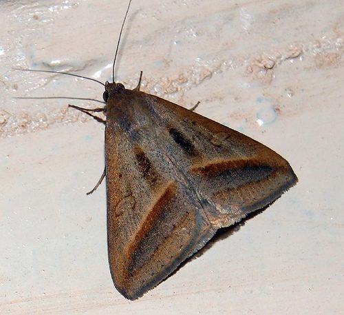

शुगरकेन लूपर पतंगाSugarcane Looper
Mocis frugalis · Erebidae · INS-0311

- Scientific name वैज्ञानिक नाम
- Mocis frugalis (Fabricius, 1775)
- Family कुल
- Erebidae
- Hindi हिंदी
- शुगरकेन लूपर पतंगा
- Local names स्थानीय नाम
- sugarcane looper, sugarcane looper patanga
- Status here यहाँ की स्थिति
- native
- Movement आवागमन
- Resident, here all year
- Known from कहाँ दर्ज
- Others have published records from the wider Awadh–Purvanchal plain, none yet from Basti–Ayodhya अवध–पूर्वांचल से दूसरों के प्रकाशित अभिलेख, बस्ती–अयोध्या से अभी नहीं
- IUCN IUCN
- not evaluated
- Review समीक्षा
- not yet reviewed
When to look कब देखें
Present all year. साल भर मौजूद।
Tell it apart from इनसे अलग पहचानें
शुगरकेन लूपर पतंगा / Sugarcane Looper
Mocis frugalis (Fabricius, 1775) — Erebidae
शुगरकेन लूपर पतंगा — यह भूरे-धूसर रंग का एक मध्यम आकार का पतंगा है जिसके अगले पंख पर एक तिरछी रेखा होती है जो अंदर से हल्की और बाहर से लाल-भूरी होती है। इसके अगले पंख के किनारे के पास छोटे काले बिंदुओं की एक कतार होती है। इसकी इल्ली हल्के पीले-गेरुए रंग की होती है जिस पर गहरी धारियाँ पाई जाती हैं।
Quick Identification त्वरित पहचान
| Feature | Description |
|---|---|
| Wingspan | 36–50 mm (Hampson 1894, p. 527) |
| Ground colour | Grey-brown (Hampson 1894, p. 527) |
| Forewing markings | Diffused dark mark above centre of vein 1; an oblique postmedial line pale inwardly, red-brown outwardly; a submarginal series of black specks (Hampson 1894, p. 527) |
| Variable spot | Some specimens have a black spot above the inner margin of the forewing before the middle (Hampson 1894, p. 527) |
| Hindwing markings | Postmedial and diffused submarginal lines (Hampson 1894, p. 527) |
| Male legs | Hind tibiae and tarsi of male clothed with long thick pile (Hampson 1894, p. 527) |
Field tip: Look for a grey-brown moth with an oblique postmedial line (pale on the inner side, red-brown on the outer side) and a submarginal row of black specks on the forewing (Hampson 1894, p. 527).
हिंदी: इसके पंखों का फैलाव 36 से 50 मिमी होता है। भूरे-धूसर अगले पंख पर अंदर से हल्की व बाहर से लाल-भूरी तिरछी रेखा और किनारे के पास काले बिंदुओं की कतार इसकी मुख्य पहचान है।
Morphology आकारिकी
Biometrics:
| Measurement | Range | Source |
|---|---|---|
| Expanse | 36–50 mm | Hampson (1894, p. 527) |
Hampson (1894, p. 527) describes the moth: "Grey-brown. Fore wing with a diffused dark mark above the centre of vein 1 ; an oblique postmedial line pale inwardly, red-brown outwardly ; a submarginal series of black specks. Hind wing with postmedial and diffused submarginal lines. Some specimens have a black spot above inner margin of fore wing before the middle." Under section Remigia, Hampson (1894, p. 527) also notes: "Male with the hind tibiae and tarsi clothed with long thick pile."
Larval Stage
Hampson (1894, p. 527) describes the larva: "Larva pale yellowish ochreous, with darker lines ; two subdorsal lines ; and a sublateral series of olivaceous spots ; 4th and 5th somites edged behind with black."
हिंदी: हैंपसन (1894) के अनुसार नर के पिछले पैरों पर लंबे घने बाल होते हैं। इसकी इल्ली हल्की पीली-गेरुई होती है, जिस पर गहरी धारियाँ, जैतूनी रंग के धब्बे और चौथे व पाँचवें खंड के पीछे काला किनारा होता है।
Behaviour & Ecology व्यवहार और पारिस्थितिकी
Not available in consulted sources.
हिंदी: इसके व्यवहार और पारिस्थितिकी का विस्तृत विवरण देखे गए स्रोतों में उपलब्ध नहीं है।
Life Cycle / Phenology जीवन चक्र
Not available in consulted sources.
हिंदी: इसके जीवन चक्र और मौसमी गतिविधि का विवरण देखे गए स्रोतों में उपलब्ध नहीं है।
Host Plants or Prey आहार
Hampson (1894, p. 527) records the larval food-plants as Zingiberaceae.
हिंदी: हैंपसन (1894) के अनुसार इसकी इल्ली Zingiberaceae (अदरक कुल) के पौधों को खाती है।
Predators / Natural Enemies शत्रु
Not available in consulted sources.
हिंदी: इसके प्राकृतिक शत्रुओं का विवरण देखे गए स्रोतों में उपलब्ध नहीं है।
Agricultural / Human Relevance कृषि प्रासंगिकता
Not available in consulted sources.
हिंदी: इसके कृषि या मानव महत्व का विवरण देखे गए स्रोतों में उपलब्ध नहीं है।
Expected Locally स्थानीय रूप से अपेक्षित
Not a field record. Written from published accounts for eastern Uttar Pradesh. No confirmed local sighting yet — if you have seen it, that is what the atlas needs.
अभी तक स्थानीय पुष्टि नहीं। यह विवरण प्रकाशित स्रोतों से है, किसी अवलोकन से नहीं।
Hampson (1894, p. 527) gives its range as throughout the Oriental region. GBIF holds published records from the wider Awadh–Purvanchal plain, none yet from Basti–Ayodhya: four photographed records by three observers — three from Lucknow (19 November 2025, 9 October 2026, and 13 November 2026) and one from Varanasi (19 October 2026). A first local record would be a clear photograph showing the grey-brown wings, oblique pale-and-red-brown postmedial line, and submarginal black specks with place and date, sent through the About page.
हिंदी: हैंपसन (1894) ने इसे पूरे ओरिएंटल क्षेत्र में दर्ज किया है। जीबीआइएफ (GBIF) में लखनऊ से तीन और वाराणसी से एक अभिलेख है, पर बस्ती या अयोध्या से अभी कोई अभिलेख नहीं है।
Distribution वितरण
Global range: Hampson (1894, p. 527) gives: "W. Africa and throughout the Oriental and Australian regions."
In India: Throughout the Oriental region (Hampson 1894, p. 527).
In Uttar Pradesh: GBIF holds four photographed records by three observers: Lucknow (19 November 2025, 9 October 2026, 13 November 2026) and Varanasi (19 October 2026).
In Basti district / eastern UP: GBIF holds no record from Basti or Ayodhya.
हिंदी: हैंपसन (1894) के अनुसार यह पश्चिम अफ्रीका तथा पूरे ओरिएंटल और ऑस्ट्रेलियाई क्षेत्रों में पाया जाता है। उत्तर प्रदेश में जीबीआइएफ पर लखनऊ और वाराणसी के अभिलेख हैं, पर बस्ती और अयोध्या से कोई अभिलेख नहीं है।
Research Questions शोध प्रश्न
Anyone can investigate these | कोई भी इन प्रश्नों की जाँच कर सकता है
- Does Mocis frugalis occur in Basti and Ayodhya districts, given its records in Lucknow and Varanasi? / क्या बस्ती और अयोध्या जिलों में शुगरकेन लूपर पतंगा मिलता है?
- In which months are adults active in eastern Uttar Pradesh (given October and November records in Lucknow and Varanasi)? / पूर्वी उत्तर प्रदेश में यह पतंगा किन महीनों में सक्रिय रहता है?
- Which Zingiberaceae or other local plants serve as larval hosts in eastern Uttar Pradesh?
- How frequently does the form with a black spot above the inner margin occur in local populations?
- Can a child spot the oblique line and row of tiny black dots on a resting grey-brown moth without catching it? (No equipment needed.)
हिंदी: कोई भी व्यक्ति बिना किसी उपकरण के बैठे हुए भूरे-धूसर पतंगे के पंख की तिरछी रेखा और काले बिंदुओं की कतार को देख सकता है।
Similar Species मिलती-जुलती प्रजातियाँ
| Species | How to tell apart | हिंदी |
|---|---|---|
| Brown-striped Semilooper (Mocis undata) | Pale red-brown (rather than grey-brown) with an oblique antemedial pale line bordered by a diffused red-brown band, a sinuous medial line, a large indistinct reniform, and a dark postmedial line irregularly recurved at vein 2; hindwing ochreous fuscous (Hampson 1894, p. 526, as Remigia archesia). Note that both species may have a black spot above the forewing inner margin before the middle (Hampson 1894, pp. 526–527) | हल्का लाल-भूरा रंग, कई लहरदार पट्टियाँ और धूसर-गेरुआ पिछला पंख (भूरी-धारी सेमीलूपर पतंगा) |
Field rule: A grey-brown moth with an oblique postmedial line (pale inwardly, red-brown outwardly) and submarginal black specks, lacking the sinuous medial line and large reniform of M. undata, is Mocis frugalis (Hampson 1894, pp. 526–527).
हिंदी: भूरे-धूसर पंख पर सीधी तिरछी रेखा और किनारे पर काले बिंदुओं की कतार से इसे भूरी-धारी सेमीलूपर पतंगा से अलग पहचाना जा सकता है।
Taxonomy & Classification वर्गीकरण
Original description. Fabricius, J. C. (1775). Systema Entomologiae, vol. 6, p. 601, as Noctua frugalis (GBIF; Hampson 1894, p. 527 cites Fabricius, Syst. Ent. vi, p. 601).
Subspecies. Not available in consulted sources.
Family and order placement. Order Lepidoptera, family Erebidae (GBIF); other atlas members of Erebidae include Tropical Tiger Moth (Asota caricae) and Bordered Tussock Moth (Lymantria marginata). Hampson (1894, p. 527, entry 2574) placed it in Noctuidae under Remigia.
Phylogenetic notes. Placed in Mocis and Erebidae in modern classifications (GBIF), whereas Hampson (1894, p. 527) treated it as Remigia frugalis in Noctuidae.
IUCN status rationale. Not evaluated on the IUCN Red List.
हिंदी: इसका पहला वैज्ञानिक वर्णन फैब्रिसियस (1775) ने किया था। हैंपसन (1894) ने इसे Remigia frugalis के रूप में Noctuidae कुल में रखा था, जबकि आधुनिक वर्गीकरण में यह Erebidae कुल और Mocis वंश में है।
Photo Gallery फोटो गैलरी
No photos yet — add field photos to media/species/sugarcane_looper/ and run node scripts/sync_photos.js.
Photos needed आवश्यक फोटो
- [ ] Dorsal view showing the grey-brown wings and oblique postmedial line (ऊपरी सतह, भूरे-धूसर पंख और तिरछी रेखा दिखाता चित्र)
- [ ] Forewing submarginal black specks and inner-margin markings (अगले पंख के किनारे के काले बिंदु दिखाता चित्र)
References संदर्भ
- Fabricius, J. C. (1775). Systema Entomologiae. Vol. 6, p. 601 (cited in Hampson 1894, p. 527).
- Hampson, G. F. (1894). The Fauna of British India, including Ceylon and Burma. Moths. Vol. 2 (p. 527, as Remigia frugalis). Taylor and Francis, London.
- GBIF Occurrence Data — Mocis frugalis (Fabricius, 1775), India (2025).
Source file: species/fauna/insects/sugarcane_looper.md